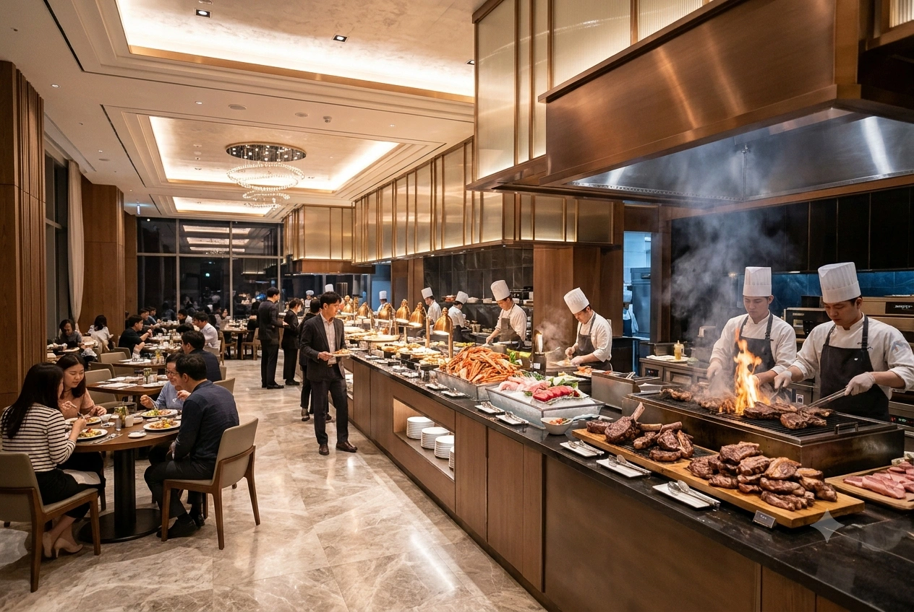

희산벨리 효빈(Huisan Valley Hyobin)은 효빈광역시 최고의 부촌이자 문화·예술·상류층의 중심지인 창전구 창전동 한복판에 우뚝 솟아 있는 지상 32층, 지하 6층 규모의 초호화 공식 5성급(★★★★★) 럭셔리 호텔이다. 북구 고송동의 바닷가를 지배하는 5성급 터줏대감이 오하리 가문의 효빈 하라오호텔이라면, 남부 도심과 창전구 부촌의 스카이라인을 지배하는 하이엔드 비즈니스·MICE 호텔의 정점은 단연 이 희산벨리 효빈이다.
효빈시 재계 서열 2위이자 '초우량 무차입 현금 괴물'로 불리는 희산그룹(모기업 희산공업)의 제3대 총괄회장 서형연이 그룹의 투박한 '기름쟁이 공단 굴뚝' 이미지를 하이엔드 문화 기업으로 완벽하게 세탁하기 위해 은행 대출 단 1원 없이 순수 현금 유보금 3,000억 원을 일시불로 때려 박아 지어 올린 역작이다. 현재는 서형연 회장의 장녀이자 그룹 4대 대권 후보 기호 1번인 '우아한 마녀' 서전희 총괄부사장이 대표이사를 맡아 완벽주의에 가까운 경영을 펼치고 있다.
효빈 도시철도 1호선 탄성지선(파란색, `#0077DD`) 및 2027년 9월 개통 예정인 창전선(하늘색, `#33AAFF` / 급행 정차역)의 더블 역세권인 창전구청역에서 도보로 불과 250m(약 3분) 거리에 위치해 있다. 이 기막힌 접근성과 극강의 럭셔리 스펙 덕분에 효빈을 방문하는 국빈급 외교 사절단, 글로벌 중장비 메이커(캐터필러, 볼보 등)의 회장단, 그리고 창전구 부호들의 사교 모임 장소를 싹쓸이하고 있다. 과거 모기업인 희산공업을 '회산공업'으로 오타 내는 전통(?)에 따라, 내비게이션이나 택시에서 '회산벨리호텔'이라고 잘못 부르는 외지인들이 수두룩하다.
북구의 효빈 하라오호텔이 '파라오 모텔'이라는 억울한 오해를 받는다면, 희산벨리 효빈은 모기업(희산공업)이 수십 년간 겪어온 유구한 오타인 '회산벨리호텔(Hoesan Valley Hotel)'이라는 오명에 시달린다. 라이벌인 북구의 1위 기업 회주기업과 남구의 2위 기업 희산그룹의 이름이 외지인들의 뇌 속에서 퓨전(회주+희산=회산)을 일으키기 때문이다. 심지어 호텔을 시공한 자회사 희산건설조차 2000년에 지은 사원 아파트 등기부등본에 구청 공무원 오타로 '회산건설'이라 박혀 있을 정도다.
하지만 정작 호텔 프런트에서 직원에게 실수로 "여기 회산벨리 맞죠?"라고 물어보면, 코넬대 출신 지배인들이 한 치의 흐트러짐 없는 온화한 미소로 "고객님, 저희 모기업이 태산도 들어 올리는 중장비를 만들다 보니 산을 돌리는 '회산(回山)'으로 많이들 불러주십니다만, 복된 산을 뜻하는 '희산(禧山)'벨리 효빈이 정확한 명칭입니다. 환영합니다."라며 고품격 멘트로 응수하도록 철저히 매뉴얼화되어 있다.
또한 호텔 이름의 '벨리(Valley)'를 두고, 해발고도가 낮은 평지이자 해안 인접 부촌인 창전동에 무슨 계곡(Valley)이 있냐며 의아해하는 사람들이 많다. 사실 이는 창업주 서천혁의 호인 '희산(禧山, 복된 산)'에서 파생된 네이밍이다. 3대 서형연 회장과 장녀 서전희 부사장이 호텔 이름을 지을 때, "할아버지가 세우신 거대한 '희산(강철의 산)' 아래로, 황금빛 '돈과 문화의 강물'이 모여들어 흐르는 풍요로운 골짜기(Valley)를 만들겠다"는 야심 찬 풍수지리적·자본주의적 포부를 담아 '희산벨리'로 명명한 것이다.[2]
2000년대 중반까지만 해도 희산그룹은 영업이익률이 효빈시 1위인 어마어마한 현금 부자였으나, 시민들에게는 그저 "남구 항동 공단에서 포크레인 팔뚝 용접하고 시꺼먼 기름밥 먹는 구시대적 공장"으로만 인식되었다. 이에 누나 네 명의 감수성을 흡수하며 자란 제3대 서형연 회장은 2005년 취임과 동시에 "아버지가 쇳물로 밥그릇을 빚으셨다면, 나는 그 밥그릇을 황금 쟁반 위에 올려놓겠다"며 그룹의 르네상스를 선언했다.
평생 현장에서 쇳가루만 마신 아버지(제2대 서성직 회장)가 "그 돈 3,000억이면 독일제 선반 기계를 오백 대 더 산다!"며 결재판을 집어 던졌으나, 서형연 회장은 8시간 밤샘 프레젠테이션으로 아버지를 설득해 냈다. 그리고 미국 월스트리트 IB에서 일하던 장녀 서전희를 즉시 귀국시켜 호텔 건립 총괄 전권을 맡겼다. 서전희는 자신의 생일인 2012년 5월 12일에 맞춰 창전구청역 코앞 노른자위 땅에 지상 32층의 초호화 호텔을 개관시켰고, 개관 1년 만에 흑자 전환이라는 기적을 썼다.
무엇보다 이 호텔이 타 지역의 오만방자한 5성급 호텔들과 결정적으로 다른 점은, 창업주 서천혁이 손자 서형연에게 남긴 유언("나중에 돈 많이 벌면 우리 촌스러운 공장쟁이들 기죽지 않게 번쩍거리고 좋은 데서 고기 좀 떵떵거리며 멕여라")을 100% 실천하는 공간이라는 것이다. 서전희 부사장과 동생 서주형 부사장의 합의 하에, 희산그룹은 매년 창립기념일과 명절마다 항동 공단과 덕북 4대 지사의 현장 용접공·선반 기술자들에게 '희산벨리 효빈 1박 무료 숙박권 및 벨리 파빌리온 뷔페 4인 가족 식사권'을 폭격기처럼 뿌린다. 덕분에 평일에는 글로벌 억만장자와 정치인들이 와인을 마시고, 주말에는 평생 쇠를 깎아 그룹을 먹여 살린 공단 아저씨들이 가족들과 팔짱을 끼고 당당하게 레드카펫을 밟는, 자본주의와 노동의 가치가 가장 아름답게 결합한 성지로 불린다.
창전구 창전동 77-1번지, 창전구청과 창전 예술의 거리 사이에 우뚝 솟은 희산벨리 효빈은 겉보기에는 우아한 유럽풍 현대 건축물 같지만, 그 내부 골조와 설비는 모기업인 희산공업과 희산건설의 변태적인(?) 중공업 기술력이 총동원된 '하이테크 물리적 요새'다. 지하 6층부터 지상 32층까지 이어지는 10대 핵심 인프라를 파헤쳐보자.
회전문 안으로 발을 들이는 순간, 이탈리아 카라라산 최고급 통대리석 바닥과 함께 서전희 부사장이 직접 조향사를 고용해 만든 시그니처 향기 '벨리 오브 더 로즈(Valley of the Rose)'가 코끝을 감싼다. 로비 천장 한가운데에는 남매 대전(서전희 vs 서주형) 끝에 30억 원 예산이 반토막 나 15억 원으로 타협해 공수해 온 '이탈리아 무라노산 수제 크리스탈 샹들리에'가 찬란한 로즈골드 빛을 뿜어낸다.[3] 코넬대, 로잔 호텔학교 출신의 컨시어지들이 영어, 일본어, 중국어, 독일어, 프랑스어 등 6개 국어로 완벽한 의전을 제공한다.
이 호텔에 투숙하는 모든 손님들이 가장 먼저 경악하는 기적의 설비다. 일반 호텔 엘리베이터와 달리, 이곳의 엘리베이터 12기 하부에는 희산공업 전산 고곡지사(첨단메카트로닉스 연구소)가 특별 설계한 '초정밀 무소음 전자식 유압 댐퍼(Shock Absorber)'가 매립되어 있다. 그 진동 억제력이 얼마나 외계인 고문 수준인지, 1층에서 엘리베이터 바닥에 100원짜리 동전을 세로로 세워놓고 32층 스카이라운지까지 분속 360m로 급상승해 도착해도 동전이 절대 쓰러지지 않는다! 심지어 급정거 시의 울렁거림조차 0에 수렴해, 해외 중장비 바이어들은 이 엘리베이터 한번 타보고 그 자리에서 희산공업 부품 독점 계약서에 사인을 한다 카더라.
최대 2,000명을 동시에 수용할 수 있는 층고 10m의 초대형 무주(기둥 없는) 컨벤션 홀. 바닥 전체에 희산공업의 유압 리프트 스테이지가 깔려 있어 버튼 하나로 무대가 3m 높이로 솟아오른다. 짝수 해마다 효빈상공회의소 신년 인사회가 열리는 곳으로, 라이벌 회주기업 박성인 회장과 희산그룹 서형연 회장이 헤드테이블에 마주 앉아 불꽃 튀는 기싸움을 벌이는 장소다. 그러나 매년 3월 셋째 주 금요일이 되면, 이곳은 '희산공업 노사 합동 창립기념 대만찬장'으로 변모하여 남색 작업복을 입은 2,000명의 공단 용접 기술자들이 미슐랭 셰프의 안심스테이크를 썰며 회장님과 블루스를 추는 세상에서 가장 평화롭고 기괴한 연회장이 된다.
단언컨대 대한민국 호텔 역사상 가장 튼튼하고 무식한(?) 스펙을 자랑하는 지하 주차장. 희산건설이 시공할 당시 서성직 명예회장과 서주형 부사장이 "지하 주차장 기둥이 부실하면 호텔 전체가 무너진다!"며 원자력 발전소 격납고에 들어가는 고강도 내진 철근과 두께 1.5m짜리 콘크리트를 때려 부어 리히터 규모 8.5의 강진과 벙커버스터 폭격에도 버티도록 설계했다. 특히 VIP용 대형 세단과 슈퍼카를 이동시키는 지하 기계식 주차 리프트에는 무려 희산공업의 '100톤급 광산 굴착기용 초고압 유압 실린더'가 장착되어 있어, 탱크를 올려놓아도 미동조차 없이 부드럽게 차를 들어 올린다.
지상 148m 최상층 야외에 설치된 35m 길이의 사계절 온수 인피니티 풀. 북구 하라오호텔이 푸른 토모리 바다 뷰를 자랑한다면, 이곳은 창전구의 화려한 마천루 야경과 멀리 남구 항동 바닷가의 거대한 크레인 불빛이 어우러진 환상적인 '사이버펑크 시티 파노라마 뷰'를 선사한다. 풀장 한쪽의 자쿠지 스파에는 희산공업이 청덕 노인복지관에 기증했던 기술을 고급화한 '마이크로 버블 유압 수치료(Hydro-therapy) 제트 노즐'이 장착되어 있어, 물줄기만 맞아도 뭉친 승모근이 단 5분 만에 녹아내리는 마법을 경험할 수 있다.
스탠다드 디럭스룸부터 로열 스위트까지 총 350개의 객실을 보유하고 있다. 모든 객실에는 이탈리아 폴리폼(Poliform) 가구, 시몬스 최상위 라인인 뷰티레스트 블랙 매트리스, 뱅앤올룹슨(B&O) 사운드 시스템, 그리고 에르메스(Hermès) 어메니티가 기본 세팅된다. 가장 놀라운 것은 방음인데, 희산건설 특유의 '사원 아파트 오버스펙 시공 버릇'이 여기서도 발동하여 객실 간 벽체 두께가 일반 호텔의 2배이며, 창문은 4중 진공 방음 유리를 사용해 옆방에서 헤비메탈 밴드가 드럼을 부숴도 내 방에서는 바늘 떨어지는 소리조차 들리지 않는 완벽한 고요함을 보장한다.
스위트룸 투숙객 및 희산벨리 블랙 멤버십 VVIP만 출입할 수 있는 31층 프라이빗 라운지. 하루 4번(조식, 애프터눈 티, 해피아워, 나이트캡) 최고급 다이닝과 돔 페리뇽, 발베니 30년산 등의 주류가 무제한 제공된다. 창전구의 정재계 거물들이 은밀한 M&A 회동을 갖는 곳으로, 과거 국민의힘 조병진 시의원이 시의원 배지만 믿고 들어와 공짜 술을 내놓으라며 고성방가 갑질을 부리다가, 마침 식사 중이던 서전희 부사장에게 "품격 떨어지니 앞의 국밥집으로 가시라"는 얼음장 같은 팩트 폭격을 맞고 보안팀에게 사지가 들려 쫓겨난 역사적인 참교육 명소다.
30층 양 끝에 위치한 두 개의 최고급 특별 스위트룸. 서측의 '창전 로열 펜트하우스(1박 500만 원)'는 국빈과 글로벌 슈퍼리치를 위한 방으로, 전용 버틀러(집사)가 24시간 대기하며 과거 서석연 부사장-박은숙 여사의 40주년 은혼식 서프라이즈 파티가 열렸던 곳이다. 반면 동측의 '희산 마이스터(Meister) 스위트'는 돈이 아무리 많아도 일반인은 예약할 수 없다. 오직 희산공업과 계열사에서 30년 이상 무재해로 근속하고 정년퇴임하는 '현장 명장(Meister)' 부부와, '건담 수호 사건'의 공장장처럼 그룹의 명예를 드높인 특급 공로자 임직원에게만 무료로 개방되는 전설의 명예의 전당 객실이다.
서형연 회장의 둘째 누나인 서미현 관장(사립 미술관장)과 막내딸 서민희 큐레이터가 직접 관리하는 500평 규모의 상설 미술관 및 명품 쇼핑 아케이드. 에르메스, 샤넬, 롤렉스 등 하이엔드 부티크와 함께 데이비드 호크니, 이우환 등 거장들의 수십억 원대 진품 회화가 복도마다 걸려 있다. 투숙객에게는 전문 도슨트의 프라이빗 아트 투어가 무료로 제공되며, 가끔 남동생 서주형 부사장이 "이 그림 한 점이 우리 공장 CNC 선반 한 대 값이라고?!"라며 경악하며 뒷목을 잡는 장소이기도 하다.
일반적인 호텔 헬스장을 상상하면 오산이다. 이탈리아 테크노짐 기구는 기본이고, 이곳의 프라이빗 PT 룸과 릴랙스 존에는 희산공업 사회공헌재단이 '청덕 노인복지관'과 '희산 스마트홈'에 투입했던 의료용 정밀 유압 관절 재활 로봇과 AI 체형 교정 베드가 하이엔드 버전으로 설치되어 있다. 장시간 비행으로 허리가 삐끗한 해외 바이어들이 이 유압 교정 로봇에 30분만 누웠다 일어나면 허리 통증이 거짓말처럼 사라져, "호텔에서 디스크 치료를 받고 간다"는 극찬이 쏟아진다.
서전희 부사장의 자존심이 집약된 희산벨리 효빈의 식음료(F&B) 업장 6곳은 효빈시 미식가들의 최종 종착지로 꼽힌다. 평소에는 콧대 높은 파인다이닝의 정석을 보여주지만, 주말이나 창립기념일 주간이 되면 복지 바우처를 들고 온 수백 명의 희산공업 엔지니어 가족들과 HAF 시즌의 초부유층 오타쿠 VIP들이 뒤섞여 세상 어디에서도 볼 수 없는 유쾌하고도 럭셔리한 미식 향연을 펼쳐낸다.

보통 지방 광역시에 들어선 독립 5성급 호텔들은 높은 인건비와 유지비 때문에 만년 적자에 허덕이기 일쑤다. 그러나 희산벨리 효빈은 2012년 개관 이래 단 한 번도 적자를 낸 적이 없으며, 매년 수백억 원의 순이익을 찍어내는 괴물 같은 수익 구조를 자랑한다. 그 비밀은 크게 세 가지다.
5성급 하이엔드 호텔의 우아한 대리석 바닥 위에서 벌어지는, 서전희·서주형 남매와 희산그룹 임직원, 그리고 효빈시 기인들의 영화보다 더 기상천외한 실제 사건 10가지를 상세히 기록한다.
2023년 상반기 희산그룹 정기 이사회에서 벌어진 역사적인 남매 대첩이다. 호텔 대표인 장녀 서전희 총괄부사장은 호텔 개관 10주년을 맞아 1층 로비의 격을 서울 신라호텔이나 파리 리츠 호텔 이상으로 끌어올리겠다며, 이탈리아 베네치아 무라노섬의 유리 명장이 1년간 수작업으로 빚은 '30억 원짜리 초대형 크리스탈 샹들리에' 도입 예산안을 상정했다. 서전희 부사장은 레이저 포인터를 쏘며 "이 샹들리에가 로비에 걸리는 순간, 호텔의 시각적 아우라가 완성되어 VVIP 웨딩 및 국제 컨벤션 객단가가 최소 18% 상승하고, 3년 내에 투자 원금을 회수합니다"라며 월스트리트 애널리스트 출신다운 완벽한 IRR(내부수익률) 분석표를 띄웠다.
그러나 회의실 맨 뒷구석에서 기름 묻은 남색 작업복 점퍼를 입은 채 팔짱을 끼고 듣고 있던 차남 서주형 총괄부사장(희산공업 수장)이 벌떡 일어나 단상으로 걸어 나왔다. 그는 누나의 PT 화면을 손바닥으로 가리고 화이트보드에 보드마카로 거대한 유압 실린더 도면과 수식을 미친 듯이 적어 내려가며 사자후를 토했다.
"누나야, 지금 제정신이가?! 천장에 매달아 놓고 밥도 안 나오는 유리구슬 쪼가리 바꾸는 데 피 같은 현찰 30억을 왜 태우노!! 지금 30억이면 대당 15억짜리 독일 DMG 모리(MORI)사 최신형 5축 초정밀 CNC 머시닝센터를 두 대나 사서 항동 제1공장에 깔 수 있다! 이거 두 대 돌리면 굴착기 고압 밸브 가공 오차율이 0.001mm로 줄어들고 월 생산량이 15% 폭증해서 연간 순이익이 80억이 더 찍힌다 아이가!! 유압 실린더가 호텔 먹여 살리지, 유리구슬이 포크레인 굴려주나?!"
이 무식할 정도로 정확한 공돌이식 팩트 폭격에 서전희 부사장도 이성의 끈을 놓아버렸다. 그녀는 하이힐을 또각거리며 동생 코앞까지 다가서더니 결재판으로 화이트보드를 내리치며 맞받아쳤다.
"야 이 무식한 기름쟁이 공돌아!! 네가 그 잘난 CNC 선반으로 쇳덩어리 백날 깎아 팔아봐라, 마진율이 20%를 넘나! 내가 저 30억짜리 유리구슬 불빛 아래에 네가 목매다는 미국 캐터필러사 회장이랑 아랍 왕자님 앉혀놓고, 하룻밤에 2천만 원짜리 와인 까주면서 살살 구슬려 따내는 독점 납품 계약서 한 장이 네 공장 1년 치 매출이다!! 어디서 감히 하이엔드 호스피탈리티의 레버리지 효과를 쇳물 무게로 재단해?!"
창과 방패의 논리가 한 치의 양보도 없이 부딪히며 회의실 의자가 날아다니기 직전까지 가자, 가운데 앉아 있던 아버지 서형연 회장이 양손으로 관자놀이를 부여잡고 주머니에서 겔포스 두 포를 꺼내 씹어 삼켰다. 서 회장은 책상을 내리치며 "그만해라 이 웬수 같은 새끼들아!! 내 머리가 깨진다 깨져!! 예산 30억 정확히 반으로 쪼개! 전희 너는 이탈리아 장인한테 전화해서 유리구슬 개수를 절반으로 줄여서 15억에 맞춰 오고, 주형이 너는 독일제 선반 두 대 말고 한 대만 사!! 이상 회의 끝!!"이라는 기적의 반반 무마니(?) 솔로몬 판결을 내렸다.
그렇게 해서 현재 희산벨리 효빈 1층 로비 천장에는 원래 도면보다 크기가 살짝 아담해진(?) 15억 원짜리 무라노 샹들리에가 걸려 있는데, 놀랍게도 서주형 부사장이 미안했는지 항동 공장 연구원들을 시켜 샹들리에 회전 모터와 와이어에 '초정밀 무진동 유압 로테이터'를 달아주어, 샹들리에가 1시간에 한 바퀴씩 소리도 없이 우아하게 자전하며 빛을 흩뿌리는 세계 유일의 기계공학적 예술품으로 재탄생해 오히려 VVIP들의 찬사를 받고 있다.[4]
2026년 가을, 직장인 커뮤니티 효빈 블라인드에서 자신의 아들(희산공업 조성훈 과장)과 손자(조민수)의 건담 프라모델을 도끼로 부수겠다고 협박했다가 희산공업 항동 공장장에게 '3초 연차 전결 참교육'을 당했던 악명 높은 꼰대 정치인 조병진 전 효빈시의원(국민의힘 비례대표)이 그 직전에 이 호텔에서 벌였던 전설의 추태 사건이다.
당시 조병진 의원은 지역구 유지들에게 거들먹거리고 싶은 마음에, 비회원은 출입조차 불가능한 희산벨리 효빈 31층 '벨리 이그제큐티브 VVIP 라운지'에 양복 가슴팍에 금배지를 달고 막무가내로 밀고 들어왔다. 입구에서 프런트 매니저가 "의원님, 죄송하지만 이곳은 스위트룸 투숙객 및 블랙 멤버십 전용 공간이라 출입이 제한됩니다"라고 정중히 안내하자, 조병진은 눈을 부라리며 데스크를 손바닥으로 쾅 쳤다.
"야 이 어린놈의 새끼야! 내 배지 안 보여?! 내가 효빈시의회 조병진 의원이야!! 너네 호텔 앞 도로 포장 예산이랑 소방 점검 승인권이 다 누구 손에 있는 줄 알아?! 내가 시찰 겸 손님 좀 만나러 왔다는데 감히 문전박대를 해?! 그리고 아까 보니까 커피 한 잔에 3만 원이던데, 시의원 예우 차원에서 당장 룸 하나 내오고 발베니 30년산 한 병 공짜(Comps)로 세팅 안 해?!"
조병진의 쩌렁쩌렁한 고성방가에 라운지에서 조용히 티타임을 즐기던 프랑스 외교관들과 창전구 부호들의 눈살이 찌푸려졌다. 젊은 지배인이 땀을 흘리며 어쩔 줄 몰라 하던 그때, 라운지 안쪽 프라이빗 테이블에서 에스프레소를 마시며 재무 보고서를 검토하던 서전희 대표이사 부사장이 찻잔을 소리 없이 내려놓고 일어섰다. 버건디색 정장 슈트를 입은 그녀는 또각거리는 구두 소리를 내며 조병진의 코앞으로 걸어와, 감정이 1도 섞이지 않은 서늘한 미소를 지으며 입을 열었다.
"조병진 의원님 맞으시죠? 말씀 중에 죄송합니다만, 저희 희산벨리 VVIP 라운지는 알량한 선출직 완장이나 지위를 과시하는 곳이 아니라, 타인의 시간을 존중할 줄 아는 '품격(Class)'을 파는 공간입니다. 커피값 3만 원이 아까워서 무전취식을 요구하시고 고성방가로 저희 귀빈들의 귀를 더럽히실 거면, 엘리베이터 타고 내려가셔서 길 건너 해장국집으로 가시지요. 아, 그리고 소방 점검으로 협박하셨는데, 저희 호텔 내진 설계와 방화 셔터 유압 밸브는 대한민국 기준치의 3배로 시공되어 있어 대통령 할아버지가 오셔도 털 먼지가 없답니다. 보안팀장님? 여기 외부 소란 행위자 발생했으니, 의원님 두 발이 대리석 바닥에 안 닿게 정문 밖 보도블록까지 아주 정중하게 모셔다드려."
이 얼음장처럼 차갑고도 우아한 극딜에 조병진은 얼굴이 시뻘건 돼지 간 색깔로 변해 "너, 너 내가 누군지 알고!!"라며 손을 들려 했으나, 즉시 대기하고 있던 190cm 거구의 특수부대 출신 호텔 가드 4명이 0.5초 만에 조병진의 양팔을 겨드랑이째 끼워 들고 엘리베이터에 태워 1층 회전문을 통해 길바닥으로 사출(?)시켜 버렸다. 그 후 서전희 부사장은 놀란 외국인 투숙객들에게 유창한 불어와 영어로 "잠시 해충 방역 작업이 있었습니다. 불편을 드려 죄송하며, 오늘 라운지에 계신 모든 분들의 테이블에 최고급 샴페인을 호텔 측 부담으로 올리겠습니다"라고 선언해 박수갈채를 받았다. 이 일화가 며칠 뒤 블라인드의 '건담 수호 사건'과 맞물려 발굴되면서, 서전희 부사장은 효빈 네티즌들에게 '빛전희', '창전구의 우아한 처형인'으로 추앙받게 되었다.
대한민국 모든 특급 호텔 지배인들이 가장 이해할 수 없는 초현실적인 광경이 펼쳐지는 날이 바로 매년 3월 셋째 주 금요일, 희산벨리 효빈에서 열리는 '희산그룹 정기 주주총회 및 노사 합동 창립기념 대만찬'이다. 보통 재벌 그룹의 호텔 만찬이라 하면 턱시도와 이브닝드레스를 입은 주주들과 임원들만의 그들만의 리그지만, 희산그룹은 차남 서주형 부사장의 불호령 때문에 풍경이 180도 다르다.
서주형 부사장은 호텔 개관 첫해부터 누나 서전희에게 "누나야! 이 번쩍거리는 호텔 대리석 한 장, 샹들리에 유리구슬 하나에 들어간 돈이 다 어디서 나왔노? 우리 항동 제1·2공장이랑 산취, 상포, 군천 지사에서 형님들이 쇳가루 마시고 용접 불꽃 맞아가며 번 달러 아이가! 일 년에 하루쯤은 우리 현장 형님들이 이 호텔의 최고 VVIP 대접을 받아야 마땅하다!"라고 강력하게 밀어붙였고, 서전희 부사장 역시 아버지의 뜻을 받들어 이날 하루만큼은 호텔 전체의 일반 예약을 완벽히 닫고(Full Block) 전관을 노동자들에게 내어준다.
행사 당일 오후 5시가 되면, 창전구청역 대로변에 항동 공단과 덕북 4대 지사에서 출발한 최고급 28인승 리무진 버스 50대가 줄지어 정차한다. 호텔 정문 앞에는 새빨간 레드카펫이 깔리고, 서전희 부사장을 필두로 한 전 호텔리어들이 양옆으로 도열해 90도로 허리를 숙인다. 그러면 버스 문이 열리고, 어색하게 양복을 빼입었거나 아예 깨끗이 드라이클리닝하여 황금색 명장 배지를 단 '남색 희산공업 작업복 정복 점퍼' 차림의 현장 반장님들과 용접 기술자 2,000명이 가슴을 쫙 펴고 레드카펫을 밟으며 입장한다.
3층 그랜드 벨리 컨벤션 홀에서 열리는 만찬은 그야말로 진풍경의 연속이다. 미슐랭 셰프들이 직접 카트를 끌고 다니며 1++ 한우 안심스테이크와 오세트라 캐비어, 랍스터 테일을 무제한으로 서빙하는데, 30년 차 용접 명장 아저씨들이 나이프로 스테이크 단면을 썰어보더니 "어이 셰프 양반! 이 고기 겉면 시어링(Searing) 한 거 보니까 표면 온도는 230도로 지지고 심부 온도는 54도 미디엄 레어로 정확히 맞췄구먼! 우리 제2공장 특수강 고주파 표면 열처리하는 거랑 원리가 똑같아! 합격이야!"라며 주방장과 금속 열역학 토론을 벌인다.
만찬이 무르익으면 우아하던 제3대 서형연 회장이 양복 자켓을 벗어 던지고 무대로 뛰어 올라가 18번 애창곡인 트로트를 열창하고, 한국노총 산하 희산공업 노조위원장이 무대로 난입해 회장님과 어깨동무를 하고 블루스를 춘다. 하이라이트인 경품 추첨 시간에는 서전희 부사장이 '로열 펜트하우스 가족 숙박권'을, 서주형 부사장이 '순금 10돈짜리 황금 유압 실린더 모형'을 기관총처럼 쏘아댄다. 매년 이 행사를 취재하러 오는 효빈일보 기자들은 "노조 파업이라는 단어가 사전에서 삭제된 회사의 위엄"이라며 혀를 내두른다.
지금은 '호텔의 여왕'으로 군림하는 서전희 부사장이지만, 그녀의 생일이기도 했던 2012년 5월 12일 희산벨리 효빈 그랜드 오픈 당일에는 인생 최대의 위기가 찾아왔었다. 당시 3층 대연회장에는 효빈시 정재계 거물들, 각국 대사관 외교관들, 그리고 라이벌 회주기업의 박성인 회장 일가까지 총출동해 중공업 회사가 지은 첫 5성급 호텔의 수준을 매의 눈으로 평가하고 있었다.
그런데 만찬의 메인 요리인 프렌치 양갈비 스테이크가 서빙되기 직전인 저녁 7시 30분경, 창전동 일대 노후 변전소에 벼락이 떨어지면서 순간적인 과전류가 발생해 호텔 자체 비상발전기가 유압 밸브를 전환하는 약 5분 동안 대연회장과 로비의 메인 조명이 '퍽!' 소리와 함께 완전히 꺼져버리는 초대형 정전 사태가 터졌다! 칠흑 같은 어둠 속에서 내빈들의 당황한 웅성거림이 커지고, "역시 굴뚝 공업사가 지은 호텔이라 전기 설비도 엉망이군"이라는 비아냥이 터져 나오기 일보 직전이었다. 통제실의 호텔 지배인들은 사색이 되어 패닉에 빠졌다.
그 절체절명의 순간, 단상 옆에 서 있던 33세의 젊은 대표 서전희 전무(당시)는 단 1초의 당황도 없이 테이블 위의 촛대 하나를 집어 들어 자신의 얼굴을 비추며 무대 한가운데로 걸어 나갔다. 그리고 배터리로 작동하는 무선 마이크를 켜더니, 떨림 하나 없는 우아하고 매혹적인 목소리로 연회장 전체에 방송했다.
"존경하는 내빈 여러분, 놀라지 마십시오. 오늘 제 생일이자 희산벨리 효빈의 탄생을 하늘도 질투해 잠시 구름으로 달빛을 가렸나 봅니다. 사실 이 5분간의 어둠은, 저희 호텔의 통유리창 너머로 펼쳐지는 창전구 밤바다와 도심의 야경이 인공 조명 없이 얼마나 눈부시게 빛나는지 여러분께 온전히 보여드리기 위해 제가 준비한 깜짝 '캔들라이트(Candlelight) 퍼포먼스'입니다. 자, 지금 웨이터들이 촛불을 켜드리는 테이블부터, 1998년 빈티지 돔 페리뇽 샴페인을 호텔이 무제한으로 서비스해 드리겠습니다. 어둠 속에서 더욱 빛나는 우리의 밤을 위해, 다 함께 잔을 들어주십시오!"
그녀의 말이 끝나자마자, 사전에 훈련이라도 받은 듯 일사불란하게 움직인 남편 강민재 기획팀장(당시)과 웨이터 100명이 일제히 은제 촛대에 불을 붙여 테이블마다 세팅하고 샴페인 코르크를 '뻥! 뻥!' 경쾌하게 터뜨렸다. 동시에 전동 블라인드가 스르륵 열리며 창밖의 황홀한 창전구 야경이 어두운 홀 안으로 쏟아져 들어왔다. 내빈들은 이것이 진짜 정전 사고인 줄 꿈에도 모르고 "역시 미국 물 먹고 온 서 전무의 연출력은 차원이 다르다!"라며 기립박수와 함께 환호성을 질렀다. 정확히 5분 뒤 희산공업의 비상 가스터빈 발전기가 가동되며 샹들리에에 다시 불이 들어왔을 때, 호텔의 주가는 오히려 천장을 뚫어버렸다. 그날 밤에만 샴페인 값으로 1억 원이 날아갔지만, 서형연 회장은 딸의 미친 위기관리 능력에 감탄해 그 자리에서 자신의 호텔 지분 10%를 딸에게 증여해 버렸다.
고상한 클래식과 유럽 왕실 문화만 고집하던 서전희 부사장의 자본주의적 가치관을 송두리째 뒤흔든 사건이다. 1996년생 젊은 박효빈 시장이 취임 후 효빈시 최대 축제인 '효빈 애니메이션 페스티벌(HAF)'을 준비하면서, 아버지 서형연 회장을 찾아와 "해외에서 오는 유명 일본 성우진과 VIP 게스트들을 위해 희산벨리 객실을 좀 지원해 달라"고 요청했다. 박 시장을 끔찍이 아끼던 서형연 회장은 딸과 상의도 없이 "시장님이 하시는 일인데 당연하죠! 우리 호텔 스위트룸 시가 대비 80% 할인된 특가로 싹 다 내어드리겠습니다!"라고 약속해 버렸다.
뒤늦게 이 보고를 받은 서전희 부사장은 회장실로 달려가 뒷목을 잡았다. "아버지!! 지금 제정신이세요?! 1박에 200만 원짜리 스위트룸을 80% 할인해서 만화 축제 관계자들한테 풀라고요?! 게다가 그 성우들 보겠다고 로비에 땀 냄새 나는 오타쿠들이 캐릭터 티셔츠 입고 몰려들면, 우리 호텔에 묵는 유럽 바이어들이랑 창전구 사모님들이 기겁해서 다 빠져나간다고요!! 호텔 격 떨어집니다, 절대 안 돼요!!"라며 결사반대했다. 그러나 아버지의 고집을 꺾지 못해 울며 겨자 먹기로 축제를 맞이하게 되었다.
그런데 HAF 개막 전날, 서전희 부사장의 예상을 완전히 박살 내는 초현실적인 광경이 호텔 정문에서 벌어졌다. 일본 성우진이 체크인했다는 소문이 퍼지자, 그들과 같은 공기를 마시겠다며 전 세계의 '서브컬처 슈퍼리치(초부유층 오타쿠)'들이 몰려들기 시작한 것이다! 중동 아랍에미리트에서 전용기를 타고 날아온 석유 재벌 왕자, 미국 실리콘밸리의 IT 억만장자, 중국 상하이의 금융 재벌 2세들이 람보르기니와 롤스로이스에 러브 라이브!와 뱅드림! 캐릭터 이타샤(랩핑)를 도배한 채 발레파킹을 맡겼다.
이들은 80% 할인은커녕, 아예 정가 500만 원짜리 펜트하우스와 일반 스위트룸 100여 개를 부르는 게 값이라며 웃돈(프리미엄)까지 얹어 일주일 내내 현찰로 싹쓸이 연박 결제를 해버렸다. 심지어 아랍 석유 왕자는 최애 캐릭터의 생일을 축하해야 한다며, 32층 프렌치 레스토랑 '르 희산'을 통째로 대관해 캐릭터 등신대 하나를 식탁 상석에 앉혀놓고 1병에 1,500만 원짜리 로마네 콩티 와인과 돔 페리뇽 루미너스를 분수처럼 터뜨리며 하루 저녁에 식음료 값으로만 3억 원을 일시불로 긁고 팁으로 순금 시계를 던져주고 갔다!
사장실 CCTV로 이 경이로운 자본주의의 광기를 실시간으로 목격한 월스트리트 출신 서전희 부사장은, 눈에서 달러($) 표시가 반짝이며 단 1초 만에 태세를 180도 전환했다. 그녀는 즉시 인터폰을 들어 전 부서장들에게 긴급 명령을 하달했다.
"당장 지금 이 순간부터, 우리 호텔 로비에 미소녀 티셔츠를 입고 들어오시는 모든 분들은 아랍 왕자님과 동급인 VVIP로 모신다!! 1층 '애프터글로우 라운지' 피아니스트한테 당장 베토벤 집어치우고 뱅드림 애니송 메들리 연주하라고 해!! 그리고 주방장 불러서 룸서비스 메뉴판에 일본어와 아랍어로 '최애캐 탄신일 기념 금박 오므라이스 & 샴페인 타워 세트(세트당 300만 원)' 당일 특선으로 당장 인쇄해서 전 객실에 돌려!! 박효빈 시장님... 이 양반 진짜 돈 냄새 하나는 기가 막히게 맡는 천재였네!!"
이날 이후 서전희 부사장은 라이벌 회주기업의 박은수 이사 못지않은 '친(親)오타쿠 자본주의의 화신'으로 거듭났으며, 매년 HAF 시즌만 되면 직접 로비에 나와 성우진에게 꽃다발을 증정하며 함박웃음을 짓는다.
현재 희산벨리 효빈의 기획이사이자 서전희 부사장의 든든한 남편인 강민재(1976년생)와의 첫 만남은 재벌가 특유의 중매가 아니라, 서전희가 직접 면접관으로 들어갔던 2009년 '희산호텔 설립 TF팀 경력직 블라인드 채용 면접장'이었다. 당시 코넬대 석사와 월스트리트 IB를 거치고 갓 귀국해 눈이 정수리 위에 달려 있던 30세의 서전희 상무는, 지원자들의 이력서를 갈기갈기 찢어버릴 듯한 살벌한 압박 면접으로 면접장을 초토화시키고 있었다.
그때 마지막 조로 들어온 지원자가 바로 평범한 중산층 집안 출신으로 서울과 제주의 특급호텔 기획팀에서 잔뼈가 굵은 33세의 강민재였다. 서전희는 그의 이력서를 삐딱하게 보더니 날카로운 목소리로 선공을 날렸다.
"강민재 씨? 경력을 보니 로컬 호텔 기획팀에만 계셨네요. 중공업 모기업의 자본으로 세워지는 최초의 하이엔드 5성급 호텔을 런칭할 때, 초기 3년간 발생할 막대한 감가상각비와 매몰 비용(Sunk Cost), 그리고 브랜드 인지도의 불확실성에 대한 리스크 헷징(Risk Hedging) 방안을 지금 당장 재무적 관점에서 영어로 브리핑해 보세요."
옆의 다른 지원자들은 숨도 못 쉬고 얼어붙었으나, 강민재는 당황하기는커녕 서전희의 눈을 똑바로 바라보며 사람 좋은 부드러운 미소를 지었다. 그리고 유창한 영어로 재무 공식을 읊는 대신, 한국어로 차분하지만 뼈를 때리는 답변을 내놓았다.
"상무님, 질문의 전제가 틀렸습니다. 호텔업에서 고객의 감동을 끌어내기 위해 투자하는 공간과 서비스 비용을 '매몰 비용'이라는 차가운 회계 단어로 계산하는 순간, 그 호텔은 이미 3류 비즈니스 여관으로 전락합니다. 손님이 로비 회전문을 밀고 들어설 때 맡는 향기의 온도와 벨보이의 눈빛 하나에 10억 원을 기꺼이 태울 수 있는 미친 낭만과 배짱이 없으시다면, 호텔을 지으실 게 아니라 그냥 남구 항동에 가셔서 사원 아파트나 한 채 더 지으시는 게 재무적으로는 백번 옳습니다."
감히 오너 일가인 자신에게 "항동 가서 아파트나 지으라"고 정면으로 카운터펀치를 날린 지원자의 패기에, 옆에 앉아 있던 인사팀장은 '아, 저 미친놈 떨어졌네'라며 불합격 칸에 체크하려 했다. 그러나 그 순간, 한 번도 남에게 논리로 져본 적 없던 서전희의 심장이 쿵 하고 내려앉으며 얼굴이 살짝 붉어졌다. 면접이 끝나고 지원자들이 나가자마자, 서전희는 볼펜을 쾅 내려놓으며 인사팀장에게 명령했다.
"저 강민재라는 남자, 수석으로 합격시켜요. 그리고 다른 부서 보내지 말고 내일 아침부터 내 방 옆자리 직속 기획팀장으로 발령 내요. 당장!"
그렇게 자신의 직속 부하 직원으로 강민재를 묶어둔(?) 서전희는, 매일 밤 호텔 설계도 검토를 핑계로 단둘이 야근을 강제하며 "팀장님이 말한 그 10억짜리 향기 온도, 오늘 밤에 나랑 와인 마시면서 증명해 봐요"라는 식의 무자비한 직권남용(?) 플러팅을 퍼부었다. 결국 차가운 얼음 마녀의 직진 대시에 녹아내린 강민재가 프러포즈를 받아들이며 두 사람은 결혼에 골인했다. 지금도 호텔 내에서 서전희 부사장이 완벽주의 히스테리를 부리며 임원들을 잡도리할 때, 강민재 이사가 슬쩍 들어와 어깨를 주무르며 "여보, 매몰 비용 계산하지 말라니까 또 미간에 주름 잡네"라고 한마디만 하면 그 무서운 부사장님이 순한 양으로 변해버린다고 한다.
희산벨리 효빈의 고급스러운 가죽 장정 룸서비스 메뉴판(In-Room Dining)을 넘기다 보면, 캐비어와 트러플 파스타, 클럽 샌드위치 사이로 뜬금없이 '항동 마이스터 특제 사골 수육 국밥 & 석박지 반상 (32,000원 / 그룹 임직원 바우처 시 무료)'이라는 지극히 한국적이고 투박한 메뉴가 떡하니 자리 잡고 있다. 이 이질적인 메뉴의 탄생 배경에는 동생 서주형 부사장의 눈물겨운 공단 아저씨 사랑이 숨어 있다.
호텔 개관 초기, 명절 복지로 무료 숙박 바우처를 받아 부부 동반으로 호캉스를 온 항동 제1공장 용접 반장님들이 다음 날 아침 출근해서 서주형 부사장에게 푸념을 늘어놓았다. "아이고 부사장님, 호텔 방은 임금님 침실처럼 좋더만유, 아침에 속이 쓰려서 밥을 좀 시켜 먹을라 했더니 룸서비스에 뭔 '에그 베네딕트'인지 계란 반숙 얹은 빵쪼가리랑 풀떼기밖에 없어서리... 결국 마누라랑 컵라면 사다 먹었슈..."
이 말을 들은 서주형은 그 길로 창전구 호텔 대표실로 쳐들어가 누나 서전희의 책상을 내리쳤다. "누나야!! 우리 공장 형님들이 전날 호텔 라운지에서 양주 마시고 아침에 속 쓰려 죽겠다는데, 계란 얹은 빵쪼가리가 코로 넘어가겠나!! 당장 오늘부터 룸서비스에 펄펄 끓는 국밥이랑 깍두기 안 넣으면 내가 호텔 보일러실 유압 밸브 다 잠가버릴 줄 알아라!!"
처음엔 "5성급 호텔 엘리베이터에서 국밥 냄새나면 어쩔 거냐"며 기겁하던 서전희였지만, 결국 동생의 협박(?)에 못 이겨 타협안을 냈다. 대신 그녀의 완벽주의 성향상 대충 만들 수는 없었기에, 미슐랭 프렌치 레스토랑 '르 희산'의 수석 셰프와 한식당 '흑택헌'의 조리장을 동시에 소집해 "세상에서 가장 우아하고 잡내 없는 하이엔드 국밥을 개발하라"는 특명을 내렸다.
그 결과, 1++ 등급 한우 사골과 도가니를 프랑스산 최고급 모비엘(Mauviel) 구리 냄비에 넣고 프렌치 콩소메(Consommé) 기법으로 불순물을 완벽히 걷어내며 48시간을 우려낸 뽀얀 진국에, 저온 수비드(Sous-vide)로 부드럽게 익힌 한우 아롱사태 수육을 산더미처럼 올리고, 화이트 트러플 오일을 한 방울 떨어뜨린 미친 스펙의 '마이스터 국밥'이 탄생했다! 냄새가 새어 나가지 않도록 희산공업이 제작한 이중 진공 밀폐 은제 돔 커버에 덮여 배달된다.
더 웃긴 반전은 그다음에 일어났다. 공단 직원들 먹으라고 만든 이 국밥을, 전날 밤 컨벤션 만찬에서 폭탄주를 퍼마시고 숙취로 죽어가던 미국 캐터필러(Caterpillar)사 회장과 독일 보쉬(Bosch)사 부사장이 통역 직원의 추천으로 아침에 시켜 먹어본 것이다! 국물을 한 숟갈 뜬 캐터필러 회장은 눈이 휘둥그레져서 "Oh my god! This Korean Beef Consommé Soup is a miracle cure!! (오 마이 갓! 이 코리안 비프 콩소메 수프는 기적의 치료제야!!)"라며 뚝배기 바닥까지 원샷을 때렸고, 깍두기 국물까지 밥에 말아 먹으며 극찬을 아끼지 않았다. 이 소문이 글로벌 바이어들 사이에 퍼지면서, 현재 이 국밥은 48만 원짜리 캐비어 세트를 가볍게 누르고 희산벨리 효빈 룸서비스 부동의 주문량 압도적 1위(전체의 42%)를 차지하는 전설의 시그니처 메뉴로 등극했다.
2026년 봄, 효빈시 재계의 영원한 로맨스 전설인 희산로지스 서석연 부사장(서형연 회장의 동생, 서전희의 작은아버지)과 라이벌 회주기업의 셋째 딸 박은숙 여사가 죽음의 문턱(강물 투신 미수 사건)을 넘어 결혼에 골인한 지 정확히 40주년이 되는 '은혼식(銀婚式)' 날이었다. 평소 조용하고 낭만적인 행정학도 출신 서석연 부사장은 평생 자신의 곁을 지켜준 아내를 위해 일생일대의 서프라이즈 이벤트를 기획했고, 이 작전의 총괄 연출가로 조카인 서전희 부사장이 팔을 걷어붙였다.
이 작전은 무려 '희산그룹과 회주기업의 사상 최초 합동 극비 프로젝트'로 진행되었다. 먼저 1단계로, 박은숙 여사의 친정 오빠인 박성인 회주기업 회장이 매제(서석연)의 부탁을 받고, 회주기업의 상징인 효빈 도시철도 7호선(노면전차) 특별 객차 1량을 통째로 빼돌려 1만 송이의 생화 핑크 장미로 랩핑해 대관해 주었다. 영문도 모른 채 남편 손에 이끌려 전차에 탑승한 박은숙 여사는, 40년 전 두 사람이 가문의 반대를 피해 몰래 데이트하며 눈물을 흘렸던 옛 도심 철길 코스를 달리는 장미 전차 안에서 1차로 오열을 터뜨렸다.
이어 2단계로, 전차에서 내린 부부를 희산그룹의 최고급 마이바흐 리무진이 픽업하여 창전구의 희산벨리 효빈 30층 '창전 로열 펜트하우스'로 모셨다. 서전희 부사장은 작은아버지 부부를 위해 펜트하우스의 통유리창 전체를 1986년 결혼식 당시의 흑백 사진 홀로그램으로 수놓고, 거실 한가운데에는 두 사람이 낳아 기른 4남 3녀(7남매) 자녀들과 손주들, 그리고 양가 총수인 서형연 회장과 박성인 회장이 턱시도를 입고 깜짝 대기하도록 완벽하게 세팅해 두었다.
펜트하우스 문이 열리고 현악 4중주단의 결혼행진곡이 울려 퍼지는 가운데, 조카 서주형 부사장이 항동 공장에서 티타늄을 깎아 직접 만든 '영원히 녹슬지 않는 은혼식 기념 커플링'을 전달하자, 박은숙 여사는 다리에 힘이 풀려 주저앉으며 폭풍 눈물을 쏟았다. 이날 밤 펜트하우스 발코니에서 서형연 회장과 박성인 회장이 나란히 서서 창전구 밤하늘에 쏘아 올려진 축하 불꽃놀이를 보며 "우리 매제랑 은숙이가 효빈시 평화를 다 지켰구먼"이라며 샴페인 잔을 부딪친 장면은, 두 라이벌 가문의 가장 아름답고 감동적인 명장면으로 기록되어 있다.
희산벨리 효빈 32층의 미슐랭 2스타 프렌치 레스토랑 '르 희산(Le Huisan)'의 가장 안쪽 VIP 룸은, 매주 일요일 저녁마다 서전희 부사장의 1남 3녀 자녀들(장녀 강윤아, 차녀 강수아, 장남 강지훈, 삼녀 강진아)에게는 숨이 턱턱 막히는 '지옥의 스파르타 훈련장'으로 변한다. 코넬대 호텔경영학과 출신의 완벽주의자 엄마 서전희가 "재벌가의 일원은 포크와 나이프를 쥐는 각도 하나에서도 기품이 흘러나와야 한다"며 초등학교 입학 전부터 아이들을 풀세팅 정장 차림으로 앉혀놓고 2시간짜리 정통 프렌치 풀코스 테이블 매너를 직접 교육하기 때문이다.
"윤아, 수아! 수프 스푼을 입으로 가져갈 때 팔꿈치가 테이블에서 2cm 들렸어. 다시! 그리고 지훈이 너! 오리 콩피(Confit) 썰 때 나이프 날이 도자기 접시 바닥을 긁어서 '끼익' 소리 나게 하지 말랬지! 그건 짐승이 사냥감을 뜯는 소리지 교양 있는 신사의 식사가 아니야! 와인 글라스 스템(기둥) 잡는 손가락 모양 교정할 때까지 오늘 디저트 크렘 브륄레는 압수야!"
남편 강민재 이사가 옆에서 "여보, 애들 체하겠어 살살해..."라고 말려도 소용이 없다. 결국 2시간 동안 허리를 꼿꼿이 펴고 코로 트러플 요리를 삼킨 4남매는, 식사가 끝나고 엄마가 결재 서류를 보러 31층 집무실로 들어가는 순간 눈빛을 교환하며 1층 지하 주차장으로 빛의 속도로 도주한다.
지하 2층 방폭 주차장 구석에는, 어김없이 기름 묻은 작업복을 입은 외삼촌 서주형 부사장이 자신의 투박한 대형 픽업트럭 시동을 켜놓고 조카들을 기다리고 있다! 차에 올라탄 조카들(특히 외동아들 강지훈)이 답답한 보타이와 자켓을 벗어 던지며 "삼촌!! 오늘도 달팽이 요리 먹다가 숨 막혀 죽는 줄 알았어요!! 빨리 달려요!!"라고 외치면, 서주형은 껄껄 웃으며 "오냐! 느그 엄마는 사람이 밥을 입으로 먹는 건지 각도기로 먹는 건지 모른다니까! 꽉 잡아라, 항동 아지매 국밥집으로 쏜다!!"라며 풀악셀을 밟는다.
15분 뒤, 항동 공단 뒷골목의 허름한 24시 돼지국밥집 플라스틱 의자에 쪼르르 앉은 재벌 5세 도련님·아가씨들은, 방금 전까지 미슐랭 프렌치 코스를 먹었다는 사실이 무색하게 뚝배기에 다대기와 새우젓을 팍팍 풀고 깍두기 국물까지 부어 코를 박고 허겁지겁 국밥을 마시며 세상을 다 가진 듯한 행복한 미소를 짓는다. 물론 나중에 카드 명세서를 본 서전희 부사장에게 발각되어 서주형 부사장의 등짝이 남아나지 않는다고 한다.
현재 효빈시 5성급 호텔 업계의 판도는 북구 해안가를 장악한 오하리 가문의 효빈 하라오호텔(3호선 토모리해수욕장역)과 남부 창전구 부촌을 장악한 서전희 부사장의 희산벨리 효빈(1호선 지선 창전구청역)이 정확히 남북으로 천하를 양분하고 있다. 그동안 하라오호텔은 3호선을 통해 효빈국제공항과 토모리 해변을 10분 만에 잇는 압도적인 관광·카지노 입지를 자랑했고, 희산벨리는 1호선 탄성지선이라는 다소 아쉬운 배차 간격에도 불구하고 압도적인 시설 스펙과 중공업 비즈니스 수요로 맞서 왔다.
그러나 2027년 9월, 마침내 하늘색(#33AAFF) 노선인 효빈 도시철도 창전선이 전격 개통되면서 이 균형추에 거대한 지각변동이 예고되고 있다! 창전선이 개통되면 호텔 코앞인 창전구청역이 1호선과 창전선의 더블 환승역이자 '창전선 급행(●) 정차역'으로 격상된다. 무엇보다 소름 돋는 점은, 이 창전선 급행열차를 타면 창전구청역에서 효빈역과 시청역을 관통하여, 하라오호텔의 앞마당이자 종점인 토모리해수욕장역(3호선 환승)까지 환승 없이 한 방에 다이렉트로 꽂혀버린다는 사실이다!
즉, "낮에는 토모리 해수욕장에서 물놀이와 굿즈 쇼핑을 즐기고, 밤에는 창전선 급행을 타고 15분 만에 넘어와 조용하고 우아한 창전구 부촌의 희산벨리 효빈에서 최고급 프렌치 요리와 유압 스파를 즐기며 잔다"는 북구 관광객 강탈 시나리오가 완벽하게 성립하게 된 것이다.
이 엄청난 기회를 놓칠 리 없는 '우아한 마녀' 서전희 부사장은 벌써부터 창전선 개통 D-Day에 맞춰 호텔 지하 1층 명품 아케이드와 창전구청역 창전선 대합실을 잇는 '지하 무빙워크 직결 통로(기부채납 공사)'를 동생 서주형의 유압 굴착기 부대를 동원해 뚫고 있으며, 창전선 마스코트 캐릭터인 '심세이' 콜라보레이션 스위트룸 패키지와 회주기업 박은수 이사를 겨냥한 서브컬처 애프터눈 티 라인업을 극비리에 준비 중이다. 이에 맞서 북구 하라오호텔의 금수저 아가씨 오하리 역시 "우리 토모리 바다 손님들을 창전구 공돌이 호텔에 뺏길 순 없다 큥!!"이라며 지하 1층 비밀 굿즈 매점의 물량을 2배로 늘리고 카지노 칩 이벤트를 준비하고 있어, 2027년 9월 창전선 개통과 함께 벌어질 '효빈시 양대 5성급 호텔 여왕들의 진검승부'에 온 시민과 덕후들의 팝콘이 튀겨지고 있다.